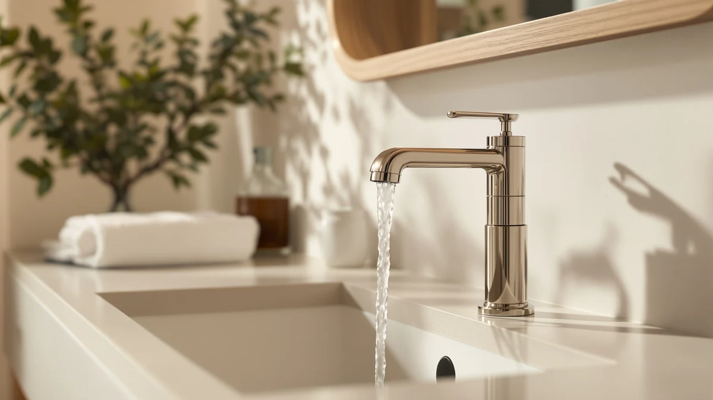

The Best Single-hole Vanity Faucets (2026)
Prices and picks verified as of September 2026. Independent, reader-supported reviews.


Quick Answer
Among the best single-hole vanity faucets we compared, the Aqua Vista 30-B410-AV Single Handle is the pick for most people: a solid brass, single-handle design that fits any standard one-hole vanity for $35.40. It carries a 4-star average from verified buyers and undercuts nearly every other faucet in this guide on price.
Our pick: Aqua Vista 30-B410-AV Single Handle — $35.40 Check Price on Amazon
Bottom line: our top pick is the Aqua Vista 30-B410-AV Single Handle Bathroom Faucet at $50.03. The best budget option is the Black Bathroom Faucet at $35.99.
Things to Know Before You Buy
- Our pick for most people is the Aqua Vista 30-B410-AV Single Handle ($35.40). It's a solid brass, single-handle faucet built for a one-hole vanity, and it costs less than every model here except the WINKEAR.
- Single-hole vanity faucets fit through one deck hole, not three. If your vanity has three predrilled holes, you'll need a deck plate to cover the extras before one of these will sit flush.
- Finish moves the price more than anything else. A basic chrome or brass finish, like the Aqua Vista or WINKEAR, runs under $40. The Delta Arvo collection, sold in brushed nickel, matte black, and a pull-style handle, starts at $104.27 and climbs to $123.42.
- Every faucet in this guide carries a 4-star average from verified buyers, so we leaned on finish quality, brand support, and price to separate the picks rather than star ratings alone.
The best single-hole vanity faucets solve one specific problem: your vanity has a single deck hole, and you don't want to drill two more to install a faucet you like.
We compared seven models built for that one-hole setup, from a $35.40 brass faucet to a $123.42 matte black option in Delta's Arvo line. The Aqua Vista 30-B410-AV Single Handle is our pick for most people. It has the solid brass body and 4-star buyer average of faucets twice its price, and it doesn't charge extra for a finish you don't need.
If you want a name-brand faucet with a fingerprint-resistant finish, the Moen LISO Spot Resist Brushed is the runner-up at $62.95. Prefer a design statement over a plain spout? The BWE Waterfall and the three Delta Arvo finishes cover that ground, and the WINKEAR gets you matte black for $35.99 if the Arvo's price tag is too high. Below, we cover how we picked these seven, how they compare on paper, and where each one falls short. If you're not sure your vanity even takes a single-hole faucet, our single-hole vs. widespread comparison walks through how to check before you buy.
Why You Should Trust Us
Best Bathroom Faucets covers one narrow product category: the faucets you install on a bathroom sink or vanity. We track finish trends, install types, and price shifts across single-hole, centerset, and widespread models, and we write up what's worth buying at each price point.
For this guide we focused on faucets built for a one-hole vanity, since that's the install most homeowners with a modern or renovated sink deal with. We don't run a paid testing lab and we don't invent expert quotes. We read the same product specs and verified buyer reviews you can find on Amazon, compare finishes and pricing across brands like Moen, Delta, Aqua Vista, and WINKEAR, and tell you where a higher price buys you something real.
How We Picked
We started with one requirement: every faucet had to install through a single deck hole, since that's what separates this guide from broader vanity faucet roundups. From there we looked at body material first. Solid brass construction, like the Aqua Vista and the three Delta Arvo models, resists corrosion and holds a finish longer than the zinc-alloy bodies common at the bottom of the market.
We also weighted brand reputation and finish variety. Moen and Delta are established plumbing brands with parts and warranty support behind them, so we included at least one faucet from each. We rounded out the field with WINKEAR and BWE, two budget-friendly options that match the Delta Arvo's finishes at a fraction of the price. For more matte black options beyond the two here, see our matte black vanity faucets guide. We passed on faucets with vague material claims, no listed finish, or a price that didn't match the features described.
How We Compared
We didn't install these faucets ourselves. Instead, we compared the best single-hole vanity faucets side by side on the factors that actually predict how a faucet holds up: body material, finish type, price relative to that finish, and what verified buyers report after months of daily use.
Brass versus finish-only construction was the first split. A solid brass faucet like the Aqua Vista or the Delta Arvo line resists pitting and holds its finish longer than a faucet with a brass-plated zinc body, even when both show a similar price on the listing. From there we weighed finish against price: a brushed nickel or matte black faucet from Delta or Moen costs more than a similar finish from WINKEAR or BWE, so we checked whether that premium tracks with brand warranty support and consistent buyer ratings, or whether it's paying for a name. Every price listed here reflects what Amazon showed when we wrote this guide, and Amazon pricing shifts, so check the current number before you buy.
Our Picks

Aqua Vista 30-B410-AV Single Handle
What we like
- Solid brass body resists corrosion better than budget zinc-alloy faucets
- Installs through a single standard deck hole with no extra hardware
- Priced under $40, among the least expensive picks in this guide
Flaws but not dealbreakers
- No major brand name behind it, so parts support may take more searching down the line
- Ships in a single finish option, with no brushed nickel or matte black variant
| Material | Brass + finish |
| Size | (Pack of 1) |
The Aqua Vista 30-B410-AV pairs a solid brass body with a single handle, and it's built for a vanity with one deck hole rather than the three-hole spread common on older sinks. At $35.40, it costs less than every faucet in this guide except the WINKEAR, and it doesn't cut corners on the body material to hit that price. Buyers consistently point to the smooth handle action and a finish that holds up without spotting, according to its 4-star average on Amazon.
What you don't get is a brand name with decades of plumbing history behind it, or a choice of finish. If you want matte black or brushed nickel, look at the WINKEAR or the Delta Arvo lineup instead. For a straightforward single-handle faucet on a budget, the Aqua Vista covers the basics without asking you to compromise on the brass body that determines how long a faucet actually lasts.

Moen LISO Spot Resist Brushed
What we like
- Moen backs it with decades of plumbing manufacturing and a widely available parts network
- Spot Resist finish holds up against fingerprints and water spots better than plain brushed nickel
- Carries a 4-star average from verified buyers
Flaws but not dealbreakers
- Costs almost twice as much as our top pick for a similar single-handle design
- The Spot Resist finish shows less character than the Delta Arvo's matte black option
| Material | Brass + finish |
| Size | — |
The Moen LISO is a single-handle, single-hole faucet finished in Spot Resist Brushed Nickel, Moen's coating designed to shrug off the fingerprints and hard-water spots that show up fast on plain brushed nickel. At $62.95, it sits well above our top pick, but you're paying for a brand with a longer track record and easier access to replacement parts if a cartridge ever fails.
Reviewers consistently note that the finish stays cleaner-looking between wipe-downs than uncoated brushed nickel faucets, which matters most in a bathroom that gets heavy daily use. If your priority is brand reliability over the lowest sticker price, the LISO is the runner-up here. If price matters more than the name, the Aqua Vista covers the same single-hole install for almost half the cost.

BWE Waterfall Bathroom Faucet Oil
What we like
- Waterfall spout gives the sink a more decorative look than a standard faucet stream
- Oil-rubbed finish hides water spots and fingerprints better than polished chrome
- Priced at $40.60, close to our top pick despite the more elaborate spout design
Flaws but not dealbreakers
- A wider waterfall spout can splash more on shallow vanity sinks
- The oil-rubbed finish is a stylistic commitment that won't suit every bathroom
| Material | Brass + finish |
| Size | Waterfall Bathroom Faucet |
The BWE Waterfall trades the usual narrow spout for a wide, flat waterfall stream, still installed through a single deck hole. It's finished in an oil-rubbed coating that reads darker and warmer than the chrome or brushed nickel finishes on most of the faucets in this guide, and at $40.60 it doesn't cost much more than a standard single-handle design.
The trade-off with any waterfall faucet is splash. A wide, flat stream needs a sink basin deep enough to contain it, so measure your vanity sink before you buy if it's on the shallow side. Owners report the finish wears well and doesn't show water spots the way a mirror-polished chrome faucet does, which offsets some of the extra care a waterfall spout demands.

Delta Arvo Brushed Nickel Bathroom
What we like
- Cheapest of the three Delta Arvo finishes in this guide by at least $5
- Backed by Delta's warranty and widely stocked replacement parts
- Brushed nickel finish resists fingerprints better than polished chrome
Flaws but not dealbreakers
- Still costs roughly three times as much as our top pick
- Brushed nickel is a more common finish than the matte black or pull-style variants in the same line
| Material | Brass + finish |
| Size | — |
The Delta Arvo Brushed Nickel is the entry point into Delta's Arvo collection, which also includes the pull-style and matte black models below. At $104.27, it's the budget pick within that line, not against the whole guide. Compared to the Aqua Vista or WINKEAR, you're still paying a premium, but that premium buys Delta's brand warranty and a finish that's easy to match with other brushed nickel hardware already in your bathroom.
If matte black or a pull-style handle appeals to you, the other two Arvo finishes below cost $5 to $19 more for the same underlying design. Verified buyers say the handle feels solid and the finish resists the fingerprints that show up fast on chrome. For most people comparing the Arvo lineup on price alone, this brushed nickel version is the one to buy first.

Delta Arvo 1 Hole Pull
What we like
- Shares Delta's Arvo body and warranty support with the brushed nickel model
- Pull-style handle offers a different grip and motion than a standard lever
- Single-hole install, same as every other faucet in this guide
Flaws but not dealbreakers
- Costs $5.74 more than the brushed nickel Arvo for a handle-style preference, not a functional upgrade
- Buyers who don't specifically want a pull-style handle get no added benefit over the base Arvo
| Material | Brass + finish |
| Size | — |
The Delta Arvo 1 Hole Pull is the same single-hole Arvo faucet as our budget pick, built with a pull-style handle instead of the standard lever. At $110.01, it costs a little more than the brushed nickel version, and that difference comes down to handle preference rather than a meaningfully different faucet underneath.
If you've used a pull-style faucet handle before and prefer the motion, this is the Arvo model to buy. If handle style doesn't matter to you, the brushed nickel Arvo covers the same install for less. Either way, you're getting Delta's brand backing and the same solid-brass construction that runs through the rest of this collection.

Delta Arvo 1 Hole Matte
What we like
- Matte black finish hides water spots and fingerprints better than brushed nickel or chrome
- Backed by the same Delta warranty and parts network as the other Arvo models
- A more current, design-forward look than the brushed nickel option
Flaws but not dealbreakers
- The most expensive faucet in this guide at $123.42
- The WINKEAR delivers matte black for roughly a quarter of the price, if brand name isn't a priority
| Material | Brass + finish |
| Size | — |
The Delta Arvo 1 Hole Matte is the same Arvo body finished in matte black instead of brushed nickel, and at $123.42 it's the priciest faucet in this guide. Matte black has become the default choice for a modern bathroom refresh, and it does a better job than brushed nickel or chrome at hiding the water spots and fingerprints that show up between cleanings.
The honest comparison here is against the WINKEAR below, which offers a matte black single-hole faucet for a fraction of this price. What the Delta buys you is brand history, warranty support, and a finish process that's held up across Delta's broader product line. If that backing matters to you, this is the pick. If it doesn't, the WINKEAR gets you the same look for much less.

Black Bathroom Faucet WINKEAR Single
What we like
- Matte black finish at $35.99, a fraction of the Delta Arvo Matte's $123.42
- Single-hole install with no deck plate or extra hardware required
- Priced close to our top pick despite the more design-forward finish
Flaws but not dealbreakers
- Lacks the established brand history and warranty network behind Delta or Moen
- Matte finishes generally show scratches more visibly than polished chrome over years of use
| Material | Brass + finish |
| Size | — |
The WINKEAR Single is a matte black, single-hole faucet priced at $35.99, which puts the finish everyone wants from the Delta Arvo Matte within reach of a much smaller budget. It installs the same way as every other faucet in this guide, through one deck hole, with no extra parts required.
What you give up compared to the Delta or Moen options is brand history. WINKEAR doesn't have the decades of plumbing manufacturing or the wide parts network that backs Delta's Arvo line, so if a cartridge fails years down the line, replacement may take more searching. For a bathroom refresh where matte black matters more than brand name, this is the pick that gets you there for under $40.
Quick Comparison
Here's how the best single-hole vanity faucets in this guide stack up on material, price, and rating.
| Product | Material | Price | Rating | Best for | Get it |
|---|---|---|---|---|---|
| Aqua Vista 30-B410-AV Single Handle | Brass + finish | $35.40 | 4 | Best overall value | View on Amazon → |
| Moen LISO Spot Resist Brushed | Brass + finish | $62.95 | 4 | Best for a trusted brand name | View on Amazon → |
| BWE Waterfall Bathroom Faucet Oil | Brass + finish | $40.60 | 4 | Best waterfall-style spout | View on Amazon → |
| Delta Arvo Brushed Nickel Bathroom | Brass + finish | $104.27 | 4 | Best affordable Arvo finish | View on Amazon → |
| Delta Arvo 1 Hole Pull | Brass + finish | $110.01 | 4 | Best for a pull-style handle | View on Amazon → |
| Delta Arvo 1 Hole Matte | Brass + finish | $123.42 | 4 | Best matte black with brand backing | View on Amazon → |
| Black Bathroom Faucet WINKEAR Single | Brass + finish | $35.99 | 4 | Best matte black on a budget | View on Amazon → |
What is a single-hole vanity faucet?
A single-hole vanity faucet mounts through one deck hole in your countertop instead of three, combining the handle and spout into one fixture.
How much do single-hole vanity faucets cost?
Prices in this guide run from $35.40 for the Aqua Vista 30-B410-AV to $123.42 for the Delta Arvo 1 Hole Matte.
The Competition
Every faucet in this guide made the list for a reason, but a few only make sense under specific conditions.
The BWE Waterfall Bathroom Faucet Oil ($40.60) is a fine faucet, but its wide waterfall spout is a style choice, not an upgrade. Unless you specifically want that flat, decorative stream and have a sink basin deep enough to handle it, the Aqua Vista covers the same single-hole install for less and with a narrower, more splash-resistant stream.
The Delta Arvo 1 Hole Pull ($110.01) and Delta Arvo 1 Hole Matte ($123.42) both share the same underlying faucet as our Delta Arvo budget pick, in a different handle style or finish. Neither outperforms the $104.27 brushed nickel version; they cost more for a look or grip preference. Buy them only if that specific handle style or matte finish is what you're after.
The Black Bathroom Faucet WINKEAR Single ($35.99) earns its spot as the budget matte black option, but it doesn't carry the brand warranty or parts network that comes with Delta. It's the right call if matte black matters more to you than brand backing; otherwise the Delta Arvo Matte is the safer long-term bet.
Weighing all seven against each other, the Aqua Vista 30-B410-AV Single Handle stays our answer for the best single-hole vanity faucets: solid brass construction, a straightforward one-hole install, and the lowest price of any pick here that doesn't cut corners on materials.
Frequently Asked Questions
What is a single-hole vanity faucet?
A single-hole vanity faucet mounts through one deck hole in your countertop instead of three, combining the handle and spout into one fixture. It suits a vanity with a single predrilled hole, and every model in this guide, including the Aqua Vista 30-B410-AV and the Moen LISO, is built for that install.
How much do single-hole vanity faucets cost?
Prices in this guide run from $35.40 for the Aqua Vista 30-B410-AV to $123.42 for the Delta Arvo 1 Hole Matte. Finish drives most of the difference: chrome and basic brushed finishes sit under $65, while the Delta Arvo collection and its matte black option push past $100.
Can you install a single-hole faucet on a vanity with three holes?
Yes, with a deck plate, sometimes called an escutcheon plate. It covers the two unused holes so a single-hole faucet sits flush on a three-hole vanity. Not every single-hole faucet ships with one, so check the listing before you buy if you're converting from a widespread setup.